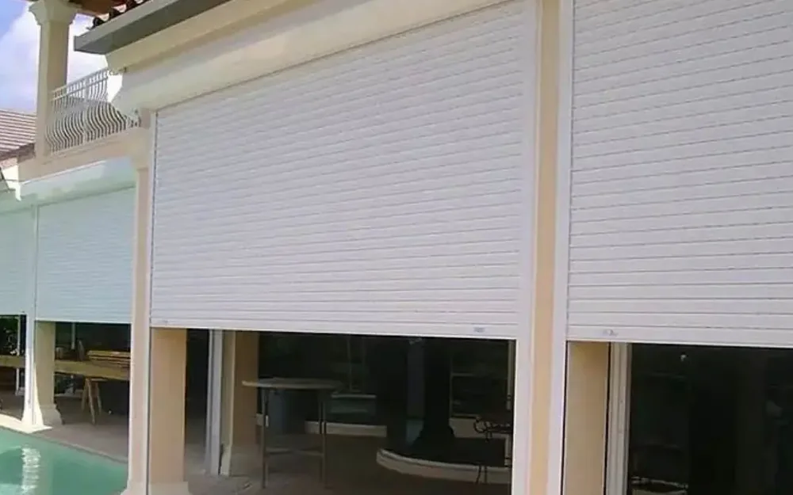

Para propietarios y operadores de condo-hoteles y hoteles pequeños en la Bahía de Akumal, Half Moon Bay y Jade Bay, y los resorts cercanos. Remodelamos habitaciones, baños, lobbies, restaurantes, albercas, fachadas e instalaciones por fases, piso por piso o bloque por bloque, para que el hotel siga vendiendo. Primero una habitación muestra, después producción a precio cerrado por llave y con una fecha de reapertura que se puede vender.

Acabados, carpintería, mobiliario, iluminación, A/C y controles, habitación por habitación o piso por piso.
Regaderas a piso, impermeabilización, nueva plomería y muebles — donde empiezan la mayoría de las quejas.
Llegada, restaurantes, bares y spa rediseñados alrededor de la experiencia del huésped.
Impermeabilización, acabados, equipos y decks, en temporada baja.
Reparación de concreto, balcones, ventanas de impacto y sellado contra la sal.
Chillers, agua caliente, electricidad, BMS y detección de incendio renovados.
Sacamos de inventario un piso o bloque a la vez, lo aislamos con barreras de polvo y ruido, usamos una ruta de servicio separada y programamos los trabajos ruidosos fuera del horario de huéspedes. Antes de producir se construye y aprueba una habitación muestra, así cada decisión — acabados, iluminación, carpintería, ruido del A/C — se prueba una vez y se repite sin sorpresas. Su equipo comercial recibe un plan fechado de habitaciones fuera de servicio para vender alrededor.
En este clima las sorpresas caras están detrás de los acabados: tuberías corroídas, impermeabilización fallida en baños y balcones, varilla oxidada en el concreto y un A/C que ya no da. Levantamos y abrimos habitaciones muestra antes de cotizar, para que el presupuesto por llave incluya lo oculto y no solo lo visible.
Akumal tiene condo-hoteles y hoteles pequeños en las bahías de Akumal, Half Moon Bay y Jade Bay, junto a tortugas y arrecifes. Se construye con baja densidad y despacio, la evaluación ambiental es cuidadosa y los costos son alrededor de 17% mayores que en Cancún.
| Alcance | Costo |
|---|---|
| Renovación ligera: pintura, textiles, iluminación, mobiliario menor | $180,000–$410,000 |
| Habitación y baño completos: acabados, baño, mobiliario, A/C | $470,000–$1,050,000 |
| Reposicionamiento: distribución, fachada y balcones, instalaciones | $1.1M–$2.6M |
| Lobby, restaurante y bar, por m² | $18,000–$41,000 |
| Remodelación de alberca y deck | $0.5M–$2.1M |
| Trabajar con el hotel en operación | +15–30% |
En Akumal: Construcción de hotel boutique · Construcción de hoteles · Fachadas y huracanes · Instalaciones y energía
Remodelación de hoteles en otras ciudades: Tulum · Cozumel · Puerto Morelos · Puerto Aventuras · Isla Mujeres · Bacalar · Holbox · Chetumal · Costa Mujeres · Cancún · Playa del Carmen
Hoteles: Remodelación de habitaciones de hotel · Cuánto cuesta construir un hotel · Cuánto cuesta remodelar un hotel · Cuánto cuesta construir un hotel boutique
Hoteles boutique, Riviera Maya · Calculadora de costo de hotel · Remodelación de hoteles en la Riviera Maya · Servicios de construcción hotelera · Permisos para hoteles
Envíe los planos, la dirección o el número de habitaciones; visitamos, levantamos el hotel y le enviamos un presupuesto por partidas. Respuesta en 2 minutos.
Cotizar por WhatsAppSu opinión ayuda a otros propietarios a decidir, y a nosotros a mejorar.
Escribir una reseñaVer reseñas en Google